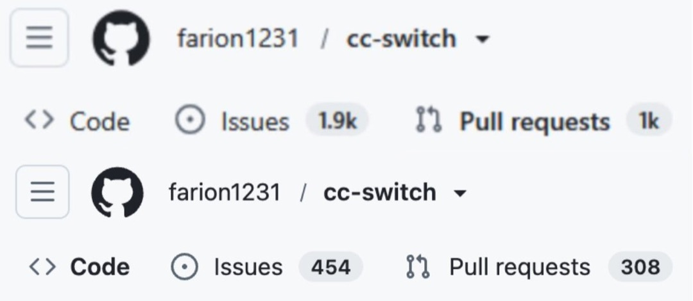
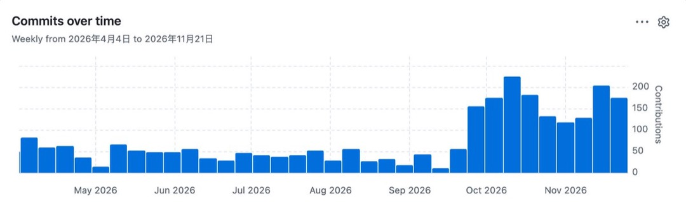
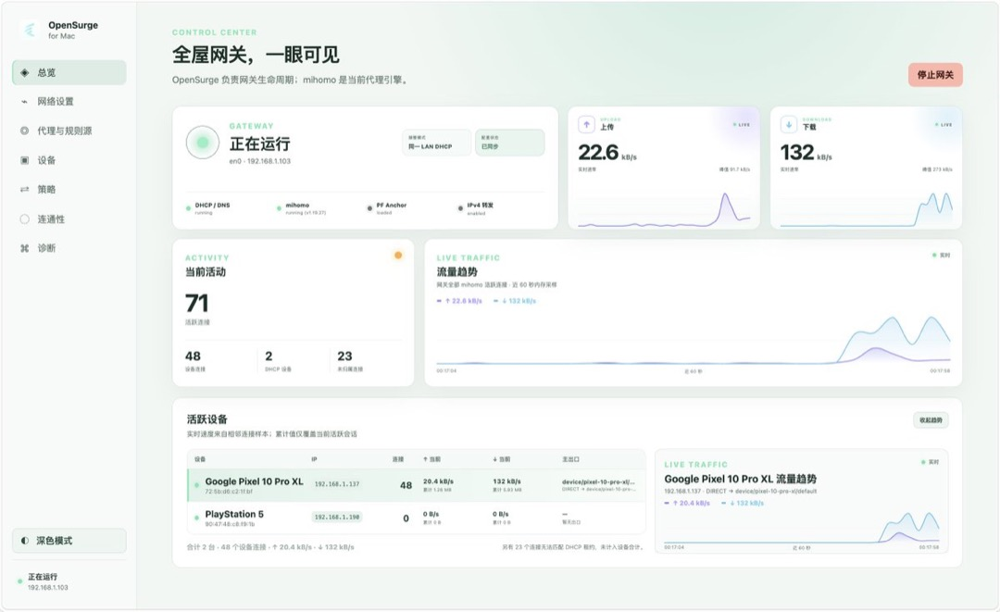

本期速览
01 Mainplane v0.6.0 支持多端操控超级 Agent
02 MeMo 用记忆模型替代 RAG
03 CC Switch 借 AI 工作流提效 PR 维护
01｜Mainplane v0.6.0 支持多端操控超级 Agent
来源（X） · @Mainplane · 2026-11-28 05:56
中文译文
Mainplane v0.6.0 发布了。
在你自己的机器上构建能完成整个项目的超级智能体。通过新的 Web UI 或手机给它们发消息。更好的本地模型支持。
自托管且 MIT 开源。带上你的 Claude 或 ChatGPT 订阅。
原文
Mainplane v0.6.0 is out.
Build super-agents that finish whole projects on your own machines. Message them from the new web UI or your phone. Better local model support.
Self-hosted and MIT open source. Bring your Claude or ChatGPT subscription.
02｜MeMo 用记忆模型替代 RAG
来源（X） · @ElliotChen · 2026-11-28 12:57
不用向量库、不做切片，而是在文档上训练一个小的「记忆模型」，主模型保持冻结，推理时去「问」它要答案。
引用内容
CrazyShyyt @CrazyShyyt
中文译文
RAG 正式死了 🤯
MIT 造了一个不需要 RAG 的 AI。
它叫 MeMo，不是把知识存进数据库，而是在你的文档上训练一个小型、专用的 Memory 模型。
推理时，你的主力前沿 LLM 保持 100% 冻结。没有向量数据库。没有分块。没有权重访问。
它只是用 3 个快速轮次审问 Memory 模型，像侦探询问证人一样，提取确切事实并综合出答案。
结果非常残酷：
• NarrativeQA（长文档）：53.6% 对 RAG 的 23.2%（好两倍多）。
• 噪声测试：用虚假干扰项将语料库翻倍。RAG 暴跌 -6.2%。MeMo 纹丝不动（+0.55%）。
而隐藏的优势呢？它完全即插即用。
训练一次 Memory 模型。当他们把主 LLM 从 Qwen2.5-32B 升级到 Gemini 3.0 Flash 且零重新训练时，准确率一夜之间跃升 +26.7%。
我们花了 3 年时间试图通过构建更好的搜索引擎来修复 AI 记忆。
事实证明，答案是给模型第二个大脑。
原文
RAG is officially dead 🤯
MIT built an AI that doesn't need RAG.
It’s called MeMo, instead of storing knowledge in a database, you train a small, dedicated Memory model on your documents.
At inference time, your main frontier LLM stays 100% frozen. No vector DB. No chunking. No weight access.
It simply interrogates the Memory model in 3 quick turns, like a detective questioning a witness, to pull exact facts and synthesize the answer.
The results are brutal:
• NarrativeQA (long documents): 53.6% vs. RAG’s 23.2% (more than 2x better).
• Noise test: Doubled the corpus with fake distractors. RAG tanked -6.2%. MeMo didn't flinch (+0.55%).
And the sleeper advantage? It’s completely plug-and-play.
Train the Memory model once. When they upgraded the main LLM from Qwen2.5-32B to Gemini 3.0 Flash with zero retraining, accuracy jumped +26.7% overnight.
We spent 3 years trying to fix AI memory by building better search engines.
It turns out, the answer was giving the model a second brain.

03｜CC Switch 借 AI 工作流提效 PR 维护
来源（X） · @Jason_Young1231 · 2026-11-28 11:37
同时大量堆积的未处理 Issue 和 PR，会给维护者带来巨大的心理负担。尤其是看到有些 PR 作者因为长时间得不到回应，最终默默关闭 PR 时，作为维护者，对这种失望感同身受。
但在考虑之后，我还是决定继续接受社区的 PR。直到今天，我依然清楚地记得去年给 Cherry Studio 提人生第一个 PR 时，那种忐忑又激动的心情。这样的机会，应该对每一个想走进开源社区的人敞开。毕竟做开源最重要的是开心，如果违背了初心，整件事也就失去了意义。另外，如果旧的开源协作机制注定要终结，能亲身经历这最后一段时光，不也是一件浪漫的事吗？
为了破局，我们借助更强的模型，打造了一套全新的 workflow；同时也招募了几位充满热情的小伙伴加入 Maintainer Team。效果立竿见影，堆积的 Issue 和 PR 大幅减少，提交和合并的效率成倍提升。
我开始觉得，AI 时代的开源维护似乎有解了。所以，欢迎大家的 Issue 和 PR！


引用内容
lihua chen @molamaker11
今晚有点丧，写点小作文整理一下吧
我觉得可以叫做《模型二代》
事情的起因是我一直在为apache的项目做贡献@TheASF 我主要贡献的项目是Opendal,arrowrs包括零零散散的iggy airflow啥的……目的嘛，一开始的时候确实我很功利，想赚一个Apache Committer的头衔证明自己，而且无论是以后求职还是研究生套磁老师感觉都很有用；做着做着，认识了很多厉害的大佬，而且愈发觉得贡献世界是一件更有成就感的事情。我时常幻想比如和别人聊天聊着，别人问你的成就，你可以说你是用的某某服务是我维护的，里面有我写的代码。这种以人为本，无私奉献别人的精神一直是我前进的动力。
可是现在几乎pr不动了，从最原来的手写pr，去细细品味算法实现，寻找bug（就像搭乐高积木一样，一个美妙的过程），再到有ai辅助情况下的“复制粘粘”工程师，到现在的许愿式编程还有全自动bot值守。人为主体的地位已经被完全抽离。像@xuanwo 的opendal的仓库，我几乎已经完全放弃pr和看代码了。他的bot几乎已经完成了全自动化维护的过程，几乎不需要有别人参与了。这确实是生产力的进步，但是也无限放大了其他contributer的贡献门槛……只差一个不接受新pr的说明了
我原来特别喜欢给apache贡献的最重要的原因便是他们严格要求ai的使用和尊重每一位contributer，每个人的努力都值得被看见。而且每次和各个大佬之间的comments，discussion还有review都是一次能够想最前沿的代码工程师学习的机会。
更主要的是成就感，“merge”，“LGTM”，“Thanks”收获别人对你的贡献的认可，是最大的奖赏。我还记得我第一个被airflow merged的pr 那个亚马逊云的工程师大叔在下面评论的thanks 真的warm my hole day
包括在之后认识的Jefftey Vo和Alamb…而现在这种机会除了老一辈apache人在坚守，几乎快要绝迹了…
并非是说全自动值守的仓库bot不好，相反，这是极致的效率和用户体验。比如@yetone 的magpie一天好几个版本迭代飞速，我作为用户爽飞了。几乎是要什么有什么。
但是这样的代价是什么呢……现在你作为人的思考主体性被完全剥离，完全discard技术细节而极致放大自己的欲望，颇有一种奶头乐de意味。已经完全不用用动脑子了，被AI圈养起来
而且对外围，大家竞争的差别在哪呢？或者这么说吧，大厂为什么不招你开除你。
——人已经可以完全被优化了，不需要你了
（这也是我前女友对我说的最多的一句话，真的不明白她为什么一直折磨我。唉，明明我已经把我的所有都给她了，但是她好像还是不满足或者说不珍惜）
细想一下非常的恐怖吗不是？
我的导师是做定位工作的，ai能力上来了现在把所有未来好几年的事情全部做完了，陷入迷茫之中；我的师兄天天和ai对话压榨论文的创新点，试图多发几篇论文，但是他自己的却几乎不去主动思考；我的另一个做单片机的师兄曾经教我“ai喂给你一坨屎，你就信了？……现在我能自己独立思考了，但是他却沉迷在和gpt的对话之中，玩着很悲哀的重置游戏，什么领域都想插一脚……
我发现几乎所有人都因为ai功利到魔障了，所有人都在疯狂拿鞭子抽ai（这里可以脑补一下猿猴抽爱因斯坦的画面），但是完全忽略了过程，只在比谁更快，比谁的订阅费更高，谁的token消耗更多，谁的发号施令自己的零参与的但是public的work更好更优秀……
竞争无关你的能力了，只关乎于你的ai聪不聪明你的harness强不强大，你的隐私上下文是不是全部给了ai。
这很悲哀
尤其揆诸当下，那些本来阶级高的人，使用ai收获的就更多，隔绝从下往上晋升的壁垒也就越厚。很多事强的人加多个ai就干完的东西，不需要你了其实。那么作为一个后来者，你究竟需要付出多么多么大的努力才能追赶上一个AI的效率？需要念多少书，或者自己浪费多少积蓄，才能追赶上完成原始积累的的那群人上层才有的背影？985的学历都已经cover不掉空缺了，做题要做多少年才能上岸，已经是大家都知道但是没有人愿意回答（btw现在的AI开发者基本都是负收益，却乐此不疲地重复造轮子……）
包括现在的大学，我其实根本就不理解学完这么旧时代的残党的意义究竟在哪。学习上个世纪的知识然后坐着等待被AI取代？收获实际一文不值的高学历，然后背着包送外卖？明明是已经所有人都发现是浪费时间的东西，却因为一个虚无的学历地位和peer之间没有意义的竞争几个通往下一个围城《硕士》当牛马的牢笼，找一些不适合自己的工作，白白浪费自己的青春，然后苦苦演一出叫做老师和同学的大学课堂的戏码
老实说当时参加newapi线下活动追星成功无疑是超级兴奋的，但是看到各路开源大神现场的coding习惯。基本我也能确定了——如果我有足够的token和时间，完全能复刻他们的工作这个事实，这让我非常失望。因为我没有能在他们身上学到有价值的东西。
又回想起了当年OI和学数竞的历史，那段时间才是留给一个人好好思考的时候吧……当黎曼猜想也被撕碎在脚下的时候，我觉得——
活在这个时代真的是一种悲哀！
04｜豆包工作接入 DeepSeek 并大幅降低倍率
来源（X） · @gimcall · 2026-11-28 12:20
刚因为取消优惠活动翻车道歉，
字节转头就提着汽油桶杀进了同一个战场。
时间线简直精准到羞辱：
11 月 9 日，WorkBuddy 因为调整 DeepSeek V4.1 Flash 折扣活动未公告，被用户吐槽到公开致歉并退还差额积分。
11 月 12 日，字节豆包工作直接接入同款模型，把消耗倍率压到 0.01，简单任务全免费，每天签到送 200 额度、连签 30 天拿 8800 额度。
目前腾讯 WorkBuddy 日活 1000 万出头，上线仅三个月的豆包工作日活已经追到 800 万+，双方差距只剩 200 万。
当年的打车软件补贴大战，今天直接在 AI 办公 Agent 赛道原封不动重演了一遍。
05｜Lemo-Opuscar 无视频模型生成多风格短片
来源（X） · @shenxiankk · 2026-11-28 08:37
这个开源项目叫 Lemo-Opuscar，值得推荐，作者凭 Claude Opus 5.5 纯写代码就做出了 99 种不同风格的影片。
水墨画、像素动画、复古胶片、3D 微缩景观、赛博霓虹、MG 动画……总共 15 大类，每一类都带成片演示和现成的风格提示词。
最绝的是，把它装进 Claude Code 以后，你只要选风格、报主题，AI 就会自己安排画面、动画、配音和音乐，最后渲染成视频！
搞 AI 短片、科普视频、品牌宣传片的人，记得收藏！
在线画廊：https://lemomo-ai.github.io/lemo-opuscar/
GitHub：https://github.com/lemomo-ai/lemo-opuscar
06｜OpenSurge 将 Mac 变为全屋透明代理网关
来源（X） · @bkdgiffug · 2026-11-28 09:06
OpenSurge for Mac这个开源项目，直接把Mac变成全屋透明代理网关。
✅ 手机、电视、NAS、游戏机自动从Mac获取DHCP/DNS
✅ 每台设备单独设走代理还是直连
✅ 设备零配置，连上网就能用
没有软路由，全屋科学分流照样享受。
Mac用户可以试试，还能省下一台设备。
🔗 https://github.com/YTwsy/OpenSurge-for-Mac
